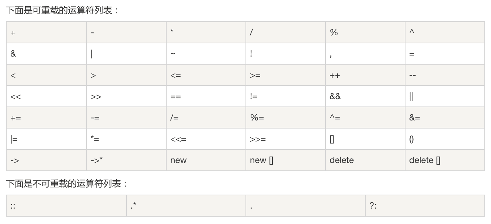

C++ 允许在同一作用域中的某个函数和运算符指定多个定义，分别称为函数重载 和运算符重载 。
重载声明是指一个与之前已经在该作用域内声明过的函数或方法具有相同名称的声明，但是它们的参数列表和定义（实现）不相同。
当您调用一个重载函数或重载运算符时，编译器通过把您所使用的参数类型与定义中的参数类型进行比较，决定选用最合适的定义。选择最合适的重载函数或重载运算符的过程，称为重载决策 。
函数重载 同众多面向对象编程语言一样，C++也支持函数重载。
函数重载是指：定义函数时，函数名相同，形参个数和类型不同。返回类型可以不同，函数实现可以不同。
1 2 3 4 5 6 7 8 9 10 11 12 13 14 15 16 #include <iostream> using namespace std;void print (int a,int b) cout<<a<<" " <<b<<endl; } void print (int a,char b,float c) cout<<a<<" " <<b<<" " <<c<<endl; } int main (int argc, char *argv[]) print (1 , 2 ); print (1 , 'z' , 1.2 ); }
上述代码中，两个print函数就是重载的函数。注意，形参个数和类型相同返回类型不同的不算函数重载，而是会报错。
运算符重载 准确说，运算符重载是C++的特性。我承认C# 也支持运算符重载，只是个人觉得他更像C++和Java混合的产物，因此它支持运算符重载也就不足为奇了。
C++中的绝大多数运算符都可以被重载。重载的运算符是带有特殊名称的函数，函数名是由关键字operator 和其后要重载的运算符符号构成的。与其他函数一样，重载运算符有一个返回类型和一个参数列表。
可重载运算符和不可重载运算符如图：

运算符重载示例 一元运算符重载 一元运算符，指对一个操作数进行操作。
C++中，一元运算符有：-，~，!，++，–。
1 2 3 4 5 6 7 8 9 10 11 12 13 14 15 16 17 18 19 20 21 22 23 24 25 26 27 28 29 30 31 32 33 34 35 36 37 38 39 40 41 42 43 44 45 46 47 48 49 50 51 52 53 54 55 56 57 58 59 60 61 62 63 64 65 66 67 68 69 70 71 72 73 74 75 76 77 78 79 80 81 82 83 84 85 86 #include <iostream> using namespace std;class Point { private : int x; int y; public : Point (int x,int y); void print () Point operator -(); Point operator ~(); Point operator !(); Point& operator ++(); Point operator ++(int ); Point& operator --(); Point operator --(int ); }; Point::Point (int x,int y){ this ->x = x; this ->y = y; } void Point::print () cout<<this <<"--->" <<x<<" " <<y<<endl; } Point Point::operator -(){ x = -x; y = -y; return Point (x,y); } Point Point::operator ~(){ x = -x; return Point (x,y); } Point Point::operator !(){ y = -y; return Point (x,y); } Point& Point::operator ++(){ (*this ).x++; (this ->y)++; return (*this ); } Point Point::operator ++(int ){ Point temp = *(this ); ++*(this ); return temp; } Point& Point::operator --(){ (*this ).x--; (this ->y)--; return (*this ); } Point Point::operator --(int ){ Point temp = *(this ); --*(this ); return temp; } int main (int argc, char *argv[]) Point p1 (1 ,2 ) ; p1. print (); -p1; p1. print (); ~p1; p1. print (); !p1; p1. print (); Point p2 = p1++; p1. print (); p2. print (); }
0x7fff553819f8--->1 2
0x7fff553819f8--->-1 -2
0x7fff553819f8--->1 -2
0x7fff553819f8--->1 2
0x7fff553819f8--->2 3
0x7fff553819d8--->1 2
分析输出，对p1做-、~、！、++、–运算，正确输出。注意++、– 前缀和后缀的区别
二元运算符重载 二元运算符，指对两个操作数进行操作。
1 2 3 4 5 6 7 8 9 10 11 12 13 14 15 16 17 18 19 20 21 22 23 24 25 26 27 28 29 30 31 32 33 34 35 36 37 38 39 40 41 42 43 44 45 46 47 48 49 50 51 52 53 54 55 56 57 58 59 60 61 62 63 64 65 66 67 68 69 70 71 72 73 74 75 76 77 78 79 80 81 82 83 84 85 86 87 88 89 90 91 92 93 94 95 96 97 98 99 100 101 102 103 104 105 106 107 108 109 110 111 112 113 114 115 116 117 118 119 120 121 122 123 124 125 #include <iostream> using namespace std;class Point { private : int x; int y; public : Point (); Point (int x,int y); void print () Point operator -(); Point operator ~(); Point operator !(); Point& operator ++(); Point operator ++(int ); Point& operator --(); Point operator --(int ); Point operator +(const Point &p); Point& operator +=(const Point &p); Point operator <<(const int i); bool operator >(const Point &p); }; Point::Point (){ this ->x = 0 ; this ->y = 0 ; } Point::Point (int x,int y){ this ->x = x; this ->y = y; } void Point::print () cout<<this <<"--->" <<x<<" " <<y<<endl; } Point Point::operator -(){ x = -x; y = -y; return Point (x,y); } Point Point::operator ~(){ x = -x; return Point (x,y); } Point Point::operator !(){ y = -y; return Point (x,y); } Point& Point::operator ++(){ (*this ).x++; (this ->y)++; return (*this ); } Point Point::operator ++(int ){ Point temp = *(this ); ++*(this ); return temp; } Point& Point::operator --(){ (*this ).x--; (this ->y)--; return (*this ); } Point Point::operator --(int ){ Point temp = *(this ); --*(this ); return temp; } Point Point::operator +(const Point &p){ Point point; point.x = (*this ).x+p.x; point.y = (*this ).y+p.y; return point; } Point& Point::operator +=(const Point &p){ this ->x+=p.x; this ->y+=p.y; return (*this ); } Point Point::operator <<(const int i){ Point point; point.x = this ->x<<i; point.y = this ->y<<i; return point; } bool Point::operator >(const Point &p){ return (this ->x+this ->y)>(p.x+p.y); } int main (int argc, char *argv[]) Point p1 (1 ,2 ) ; p1. print (); -p1; p1. print (); ~p1; p1. print (); !p1; p1. print (); Point p2 = p1++; p1. print (); p2. print (); Point p3 = p2+p1; p1. print (); p2. print (); p3. print (); p3+=p2; p3. print (); Point p4 =p2<<2 ; p4. print (); }
注意，+=和+ 运算符的区别
输入/输出运算符重载 1 2 3 4 5 6 7 8 9 10 11 12 13 14 15 16 17 18 19 20 21 22 23 24 25 26 27 28 29 30 31 32 33 34 35 36 37 38 39 #include <iostream> using namespace std; class Point{ private: int x; int y; public: Point(); Point(int x,int y); void print(); friend ostream& operator<<(ostream& outstream,const Point&); friend istream& operator>>(istream& instream,const Point&); }; Point::Point(){ this->x = 0; this->y = 0; } Point::Point(int x,int y){ this->x = x; this->y = y; } void Point::print(){ cout<<this<<"--->"<<x<<" "<<y<<endl; } ostream& operator<<(ostream& outstream,const Point& p){ outstream<<"--->"<<p.x<<" "<<p.y<<endl; return outstream; } istream& operator>>(istream& instream,const Point& p){ instream>>p.x>>p.y; return instream; }
 wechat
wechat alipay
alipay